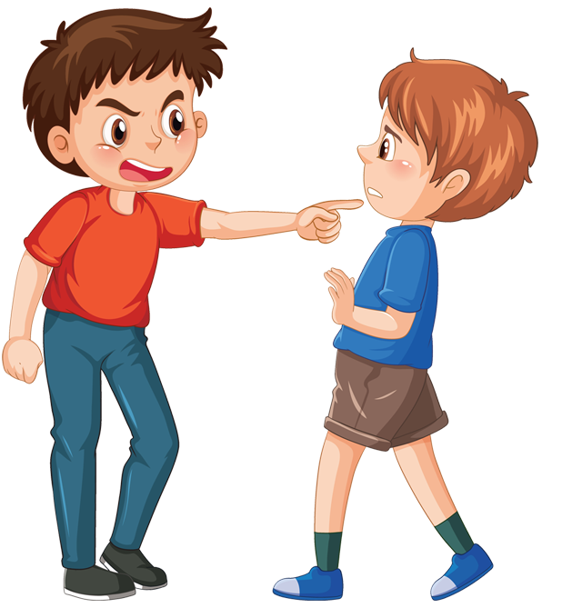

I was one of those kids, the ones that found companionship in tech, not people, and Wikipedia was the only resource back then that would teach a kid whatever they wanted to know, and didn't have snarky librarians say, "that's not for children."
I found animals were better friends than kids my own age, and quickly learned I liked working at the SPCA as a volunteer.
I was always a curious child. Wondering on how toys worked rather than playing silly games with them, I disasembeld them to see what would make them tick.
I also liked fixing things as much as taking them appart, mostly the things I broke in trying to find out how they worked.